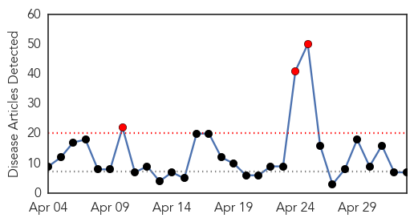
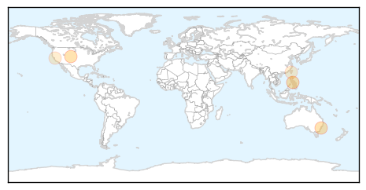
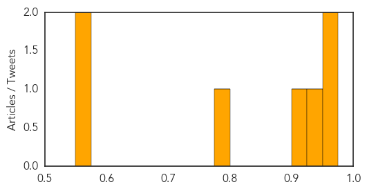
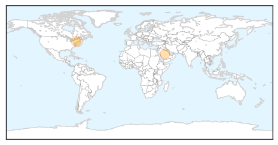

Measles
30-Day Web Trend
3 alerts, 0 warnings

30-Day Twitter Trend
0 alerts, 0 warnings

Article Locations
Article Confidences
Top Articles:
- 0.970
- Manitoba measles case prompts warning about exposure at strip bar
- 0.965
- Health unit still probing Sudbury measles case
- 0.930
- Health briefs for May 3, 2014: Measles vaccines recommended
- 0.907
- Scientists Hold Hope For New Measles Drug
- 0.781
- SGGP English Edition- Medical officials advise to keep house clean to prevent measles
- 0.569
- Number of imported measles ...｜Society｜WCT
- 0.557
- Measles confirmed in San Joaquin County
Top Tweets:
-
No tweets found for May 03, 2014
Hepatitis
30-Day Web Trend
2 alerts, 0 warnings
30-Day Twitter Trend
0 alerts, 0 warnings

Article Locations
Article Confidences

Top Articles:
Top Tweets:
-
No tweets found for May 03, 2014